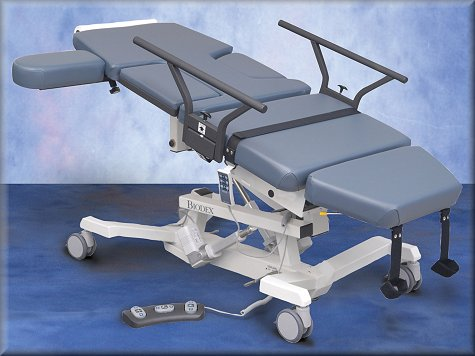

Sound Pro Combination Ultrasound Table

| Stock # | Description | Price | ||
|---|---|---|---|---|
| 058-710 | Table, Combination, Sound Pro, 115 VAC Includes: hand and foot controllers, folding side rails, vascular scanning arm board, retractable stirrups, IV pole and paper dispenser. | $10,080.00 | ||
| 058-715 | Table, Combination, Sound Pro, 230 VAC Includes: hand and foot controllers, folding side rails, vascular scanning arm board, retractable stirrups, IV pole and paper dispenser. | $10,080.00 | ||
| 056-612 | Hygenic Table Paper, 12 rolls 18" X 225' |
$116.17 | ||
Features
Ergonomic design helps prevent musculoskeletal injuries & comfortable shoulder, arm and hand positions when scanning
Allows seated or standing work positions
Extra wide top with 500-lb patient capacity, suitable for bariatric patients
Height range down to 23" accommodates wheelchair transfers and those with ambulatory difficulties
Motorized height, Fowler back, Trendelenburg and auto level adjustment
Swing-out cardiac scanning cutout doubles as armrest
Adjustable sonographer cutout for maximum patient access and comfortable scanning positioning
Vascular scanning arm board mounts to either side of table
The Sound Pro Combination Table combines the imaging features of both the Ultra Pro and Echo Pro tables. Fully equipped for OB/GYN, general ultrasound and echocardiography, this extra wide table is ergonomically designed for both patient and sonographer.
The fold away side rails and adjustable sonographer cutout cushion allow comfortable shoulder, arm and hand positions when scanning. There are no barriers between sonographer and patient, allowing correct scanning posture to prevent musculoskeletal injury. The cardiac scanning cutout provides open access to the patient's left thorax area for an unobstructed apical approach. The motorized Fowler back is infinitely adjustable to 80° via hand or foot controller.
The Sound Pro Combination Table is so accommodating, it reduces the total amount of time required to achieve a quality image. Stress patients are off the treadmill and quickly onto the table in imaging position. Patient comfort is assured even through lengthy procedures by cushioned arm supports, a thick mattress and a multitude of comfort-driven design details. The unique swing-out cardiac scanning cutout cushion doubles as an armrest, while the leg section drops down to 40° for patients with circulatory issues.
Suitable Procedures
- Abdomen
- Aorta
- Thyroid
- Breast
Ergonomic design helps prevent musculoskeletal injuries & comfortable shoulder, arm and hand positions when scanning
Allows seated or standing work positions
Extra wide top with 500-lb patient capacity, suitable for bariatric patients
Height range down to 23" accommodates wheelchair transfers and those with ambulatory difficulties
Motorized height, Fowler back, Trendelenburg and auto level adjustment
Swing-out cardiac scanning cutout doubles as armrest
Adjustable sonographer cutout for maximum patient access and comfortable scanning positioning
Vascular scanning arm board mounts to either side of table
The Sound Pro Combination Table combines the imaging features of both the Ultra Pro and Echo Pro tables. Fully equipped for OB/GYN, general ultrasound and echocardiography, this extra wide table is ergonomically designed for both patient and sonographer.
The fold away side rails and adjustable sonographer cutout cushion allow comfortable shoulder, arm and hand positions when scanning. There are no barriers between sonographer and patient, allowing correct scanning posture to prevent musculoskeletal injury. The cardiac scanning cutout provides open access to the patient's left thorax area for an unobstructed apical approach. The motorized Fowler back is infinitely adjustable to 80° via hand or foot controller.
The Sound Pro Combination Table is so accommodating, it reduces the total amount of time required to achieve a quality image. Stress patients are off the treadmill and quickly onto the table in imaging position. Patient comfort is assured even through lengthy procedures by cushioned arm supports, a thick mattress and a multitude of comfort-driven design details. The unique swing-out cardiac scanning cutout cushion doubles as an armrest, while the leg section drops down to 40° for patients with circulatory issues.
Suitable Procedures
- Abdomen
- Aorta
- Thyroid
- Breast